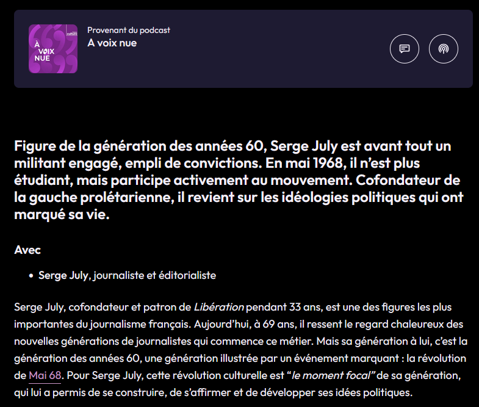
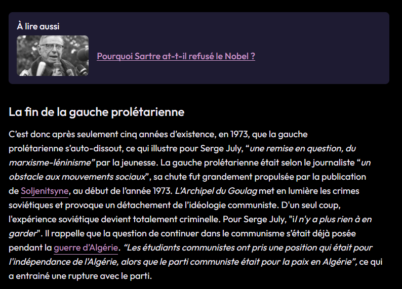
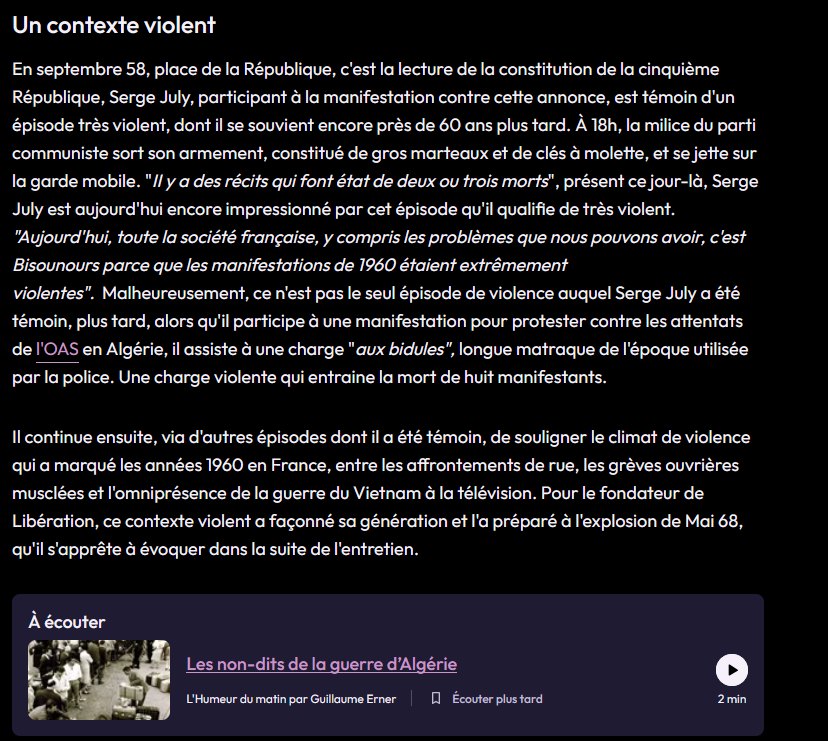

SERIE FRANCE CULTURE : Serge July
Lors de mon stage en tant qu’éditeur numérique/community manager chez Radio France, j’ai édité une série de 5 épisodes sur Serge July

Lors de mon stage en tant qu’éditeur numérique/community manager chez Radio France, j’ai édité une série de 5 épisodes sur Serge July



Concept : Le but est d’écrire un texte de deux à trois mille caractères résumant et teasant le podcast aux utilisateurs de l’application et du site web Radio France.
Compétences : Rédaction, Rigueur sur les fautes d'orthographe, Culture générale, Analyse d'un sujet
Outils : Logiciel de Back-Office de Radio France, GettyImage, AFP, dépêches journalistique